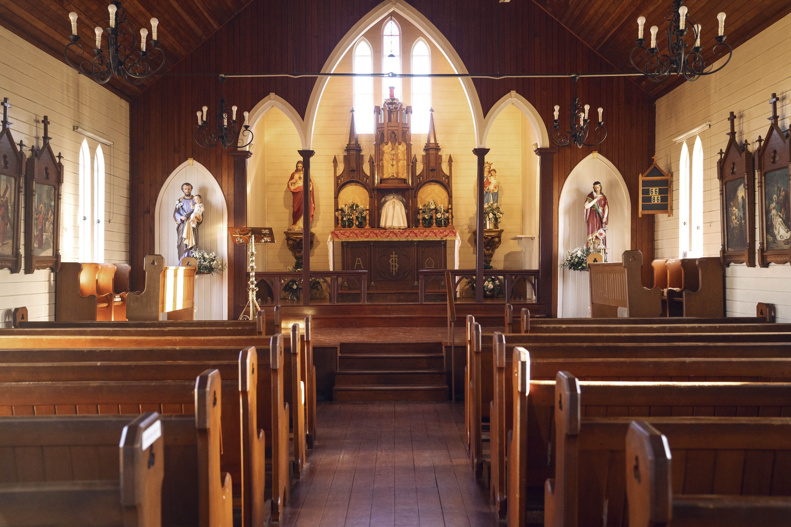

† Catholic · Classical · Distance Learning
An Education Rooted
in Truth & Tradition
St Philomena School's Distance Learning programme offers an authentic Catholic classical education for students in Years 7 & 8 — wherever they are in Australia.
Education for Education's Sake
At St Philomena School, we value education not merely as a means to something else, but for its own sake. A true education forms the whole person — intellect, will, and character.
Catholic Faith
Every subject is taught within the framework of the Catholic Faith. We form students who know their Faith, practise it, and have a deep desire to serve God.
Classical Curriculum
Latin, Logic, Rhetoric, Literature, and History form the core of our Liberal Arts programme — developing memory, analysis, and the ability to express truth beautifully.
Character Formation
The most important part of education is the formation of character. We strive to produce young men and women who are balanced, responsible, and courageous.
Distance Learning
Our Distance Learning programme brings St Philomena's classical Catholic education directly to families across Australia, regardless of location.


A Liberal Arts
Curriculum
Our Distance Learning programme covers Years 7 (Grammar Phase) and Year 8 (Logic Phase), offering a rigorous classical curriculum grounded in the Catholic intellectual tradition.
Full Curriculum

Ready to Enrol?
We welcome families who share our commitment to an authentic Catholic education. Contact us to learn more about our Distance Learning programme and the enrolment process.